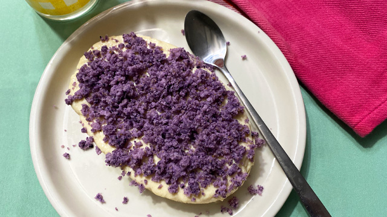

Ube Decadence Recipe

Description
Ube Decadence is actually the brainchild of Corazon Guinto and is described as a gelatin-like dessert in the shape of an oval
made with a milky pudding base and topped with ube cake crumbs. Just like a leche flan, it too is made in a llanera as well, hence the familiar shape.
The taste of this simple but delicious dessert is not too cloyingly sweet but milky, soft, and definitely addictive, especially if you're a fan of ube and maja blanca. The texture is similar to the delicate panna cotta of Italy in that it is jiggly soft but not too soft that it will fall apart if you vigorously shake the dessert.
This even has some ube jam or ube halaya tucked into the center of the dessert so you get a burst of ube when you dig in!
Ingredients
- 1 cup all-purpose cream
- 1/2 cup fresh milk
- 1/2 cup sweetened condensed milk
- 2 tablespoons gulaman powder
- 2 tablespoons fresh ube puree or bottled ube jam (ube halaya)
- 1/4 cup cake crumbs, ube
Steps
- Combine all-purpose cream, fresh milk, and condensed milk in a saucepan. Stir well. Sprinkle gulaman powder over the milk mixture. Set aside for 3 minutes.
- Place saucepan over low heat. Bring mixture to a simmer, stirring continuously. Remove from heat.
- Fill about 1/4 of two medium llaneras with the milk mixture. Place ube jam at the center of each llanera, forming a log. Fill llanera with the remaining milk mixture.
- Place llaneras in the refrigerator and let chill and set for at least 4 hours or overnight.
- Once ready, unmold ube dessert from the llanera. Sprinkle ube cake crumbs on top. Serve immediately.